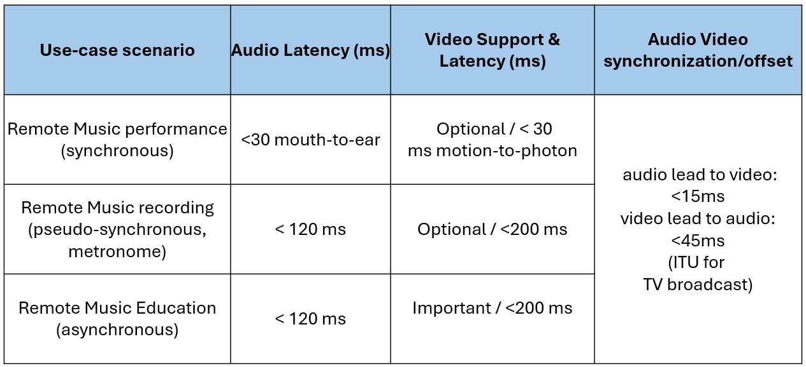
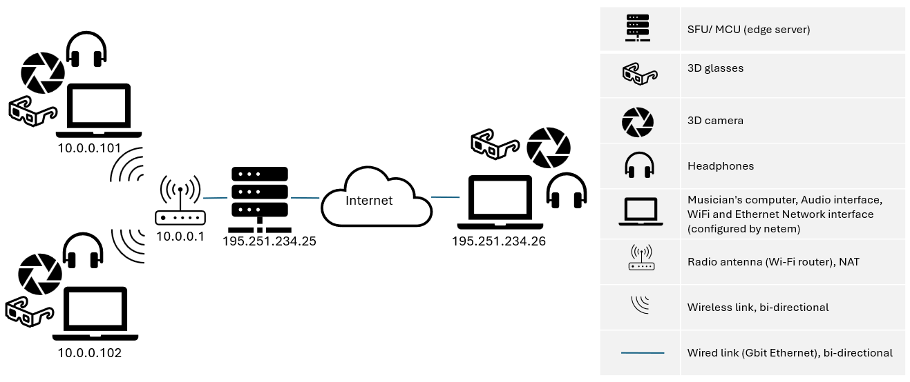
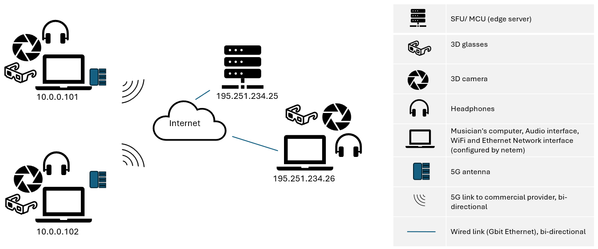
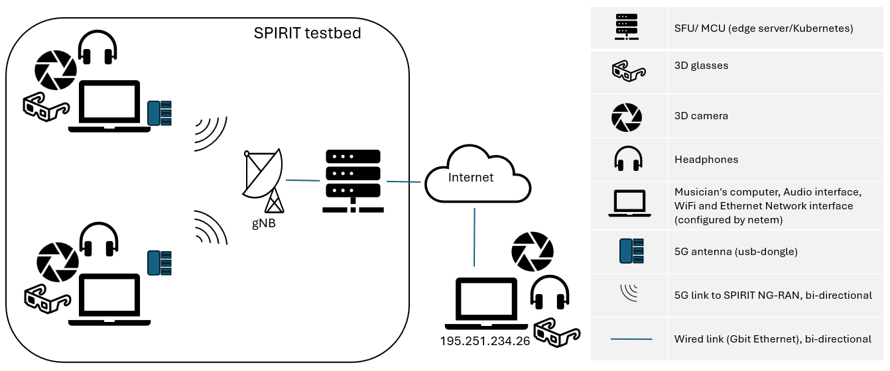
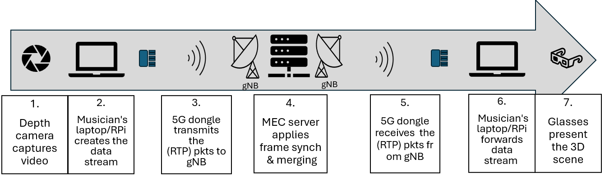

Welcome
This is the home page of the Telepresence-Enhanced Network Music Performance (TENeMP) project.
The TENeMP project is funded by the SPIRIT project.
About
The Telepresence-Enhanced Network Music Performance (TENeMP) project will use the
SPIRIT infrastructure to conduct experiments with Network Music Performance (NMP) applications over a 5G network, supporting immersive telepresence equipment and services such as holographic communications and avatar-based presence.
NMP can be a great showcase for both 5G and telepresence technologies. Its stringent latency requirements can only be supported by ultra-low latency 5G links and the availability of nearby edge computing
resources to host multiparty communication servers. The real-life presence which is essential
for both live music performance and for music teaching can only be met by exploiting
immersive telepresence technologies that allow the participants to hear and see each other
from multiple vantage points as part of a 3D scene, rather than as flat images captured on a
video camera.
TENeMP will evaluate the feasibility of different NMP scenarios and topologies
over pure 5G and mixed 5G networks, explore different ways of supporting multiparty
scenarios by exploiting edge computing resources, and will integrate future telepresence
technologies such as holographic communications and avatar-based presence with audio-
based NMP tools, to provide a unified presence experience for NMP-based performance and
education.
The project will exploit many of the components of the SPIRIT testbeds, from 5G
connectivity, via telepresence enablers, to edge computing resources, providing a showcase
for the SPIRIT platform and its capabilities. At the same time, it will not only try to assess the
feasibility of NMP over the advanced facilities offered by the SPIRIT platform, it will actively
enhance existing NMP tools with immersive telepresence, providing everyone with access to
music performance and education, regardless of their location and mobility constraints.
Experiments
The following scenarios will be evaluated:
-
Performance comparison of different NMP tools.
- Assess feasibility of Network Music Performance (NMP) in 5G networks.
- P2P transmissions / various musician placements.
-
Performance gains of edge-computing.
- Can NMP benefit from the placement of an SFU server at the edge?
-
Integration of future telepresence techniques in NMP tools.
- Integrate 3D streaming with NMP.
- Assess the feasibility with and without SFU.
Objectives
- OBJ1: Compare the performance of NMP tools over 5G. Measure the latency and bandwidth requirements of different NMP tools, that use different protocols over 5G.
- OBJ2: Assess the impact of SFU placement on NMP tools. Measure the latency and bandwidth requirements of NMP with no SFU or with an SFU, at the 5G edge or outside it.
- OBJ3: Assess the feasibility of NMP tools over 5G. Cross-examine the findings of the experimentation campaign with the individual requirements of different NMP use cases.
- OBJ4: Explore the integration of telepresence with NMP tools. Extend an open-source NMP tool to convey streams of holographic and/or avatar-based telepresence.
- OBJ5: Explore the performance of NMP with telepresence support. Measure the additional bandwidth requirements and latency overhead of the telepresence stream.
- OBJ6: Explore the in-network cost of NMP with telepresence support. Measure bandwidth requirements, latency overhead, computational and memory consumption at the SFU due to the extra telepresence stream.
- OBJ7: Assess the feasibility of telepresence-enabled NMP applications. Cross-examine the findings of the experiments with the requirements of different NMP use cases.
- OBJ8: Implement a prototype NMP tool with telepresence support. Design, develop and test a prototype NMP application supporting both audio and telepresence streams.
NMP Use Cases Requirements
TENEMP testbed @ AUEB [for development]
TENEMP testbed @ AUEB [for verification]
TENEMP @ SPIRIT testbed
3D Stream Pipeline
Metrics
- Latency:
- Measure mouth-to-ear & motion-to-photon delay
- Send impulse signals, loopback
- Use Αudacity (DAW) to measure difference
- Bandwidth:
- Measure packets (or bytes) received/sent at node network interfaces
- Several Linux-based tools create traffic (nload, bmon, iftop, vnstat, ifstat) )
- Computing cost:
- Measure CPU and memory usage of the SFU service (`kubectl top node` command (available to cluster admin)
)
The TENeMP team
Athens University of Economics and Business
AUEB participates through theMobile Multimedia Laboratory